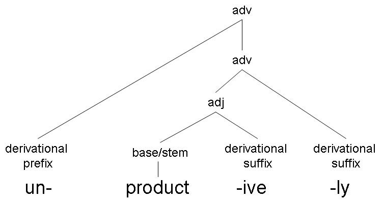
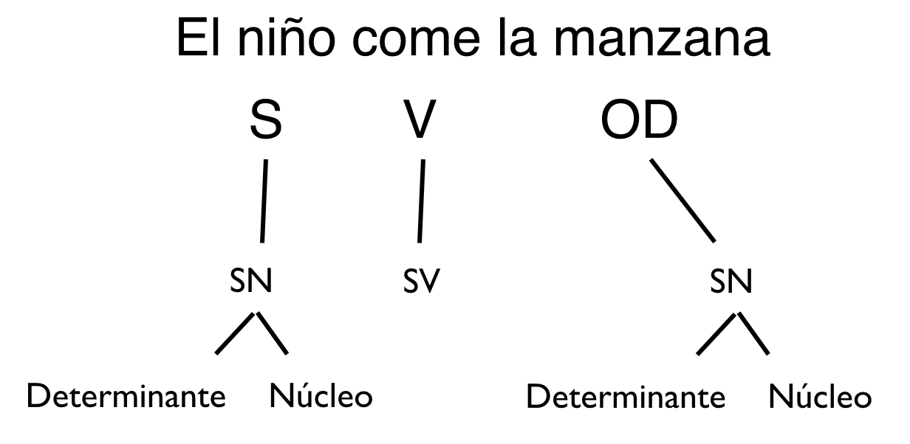
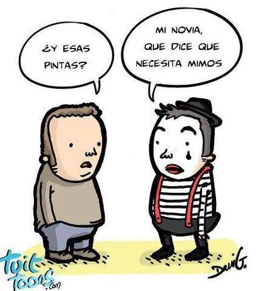
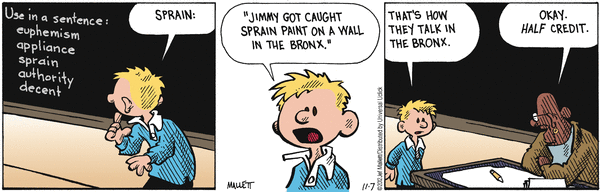
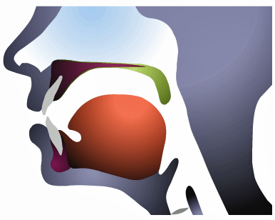
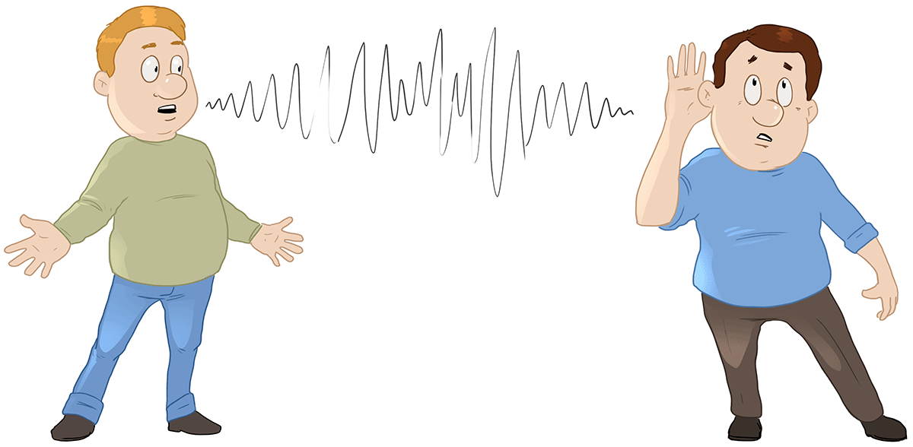
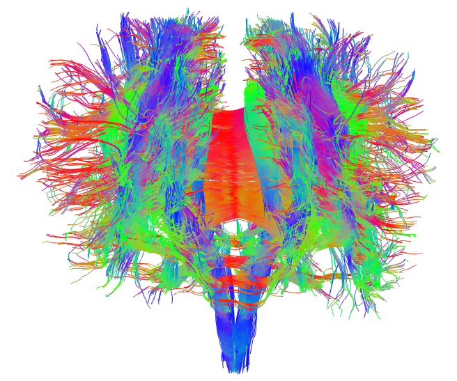

Fonética y español oral
Programa
Joseph V. Casillas
Instituto Franklin: otoño 2015
Información básica
Otoño 2015
Martes y jueves 10:30 – 12:00 am
Lugar:
Instructor: Joseph Casillas
Despacho: 1
Horas de oficina: martes y jueves de 12 a 13 y mediante cita
Email: jvcasill@email.arizona.edu
Materiales
Página web de clase
- www.jvcasillas.com/fonetica_fi_f2015/
- Presentaciones disponibles aquí
- Resúmenes imprimibles al final de cada presentación
Materiales de consulta recomendados
- Barrutia, Richard & Armin Schwegler (eds.) 1994. Fonética y fonología españolas: teoría y práctica. New York: Wiley. [2nd edition]
- Teschner, Richard V. 1996. Camino oral: fonética, fonología y práctica de los sonidos del español. New York: McGraw-Hill. [Libro de texto y cassettes].
- Hammond, Robert. 2001. The Sounds of Spanish. Somerville, MA: Cascadilla. Audio files: http://www.cascadilla.com/ssaa/index.html.
- Piñeros, Carlos Eduardo. 2008. Estructura de los sonidos del español. Upper Saddle River, NJ: Pearson, Prentice Hall
Objetivos del curso
El objetivo primordial de este curso consiste en ayudar al hablante nativo de inglés a mejorar su pronunciación del español. Se intentará cumplir el mencionado objetivo creando conciencia en el estudiante de cómo funciona el sistema fonológico del español a varios niveles: a través de un mejor entendimiento de los conceptos fonéticos y fonológicos relevantes, de la aplicación de dichos conceptos mediante ejercicios de transcripción escrita y producción oral y del reconocimiento de rasgos fonéticos y fonológicos en el español hablado, todo ello sin olvidar el importante papel desempeñado por la variación dialectal. El curso proporciona al estudiante el ambiente relajado y de apoyo que es necesario para reducir al máximo las inhibiciones y obstáculos que a menudo se interponen a la práctica de la pronunciación.
Asistencia a clase
Puesto que la mayoría de los ejercicios de transcripción y de producción/práctica oral se harán EN CLASE, es esencial para obtener una buena nota en el curso que el estudiante asista regularmente a clase y que participe activamente en la misma. Los conceptos y conocimientos impartidos no se prestan a ser adquiridos meramente a través de la lectura (independientemente del número de horas que se le dediquen). El repaso y la práctica constantes y regulares son absolutamente necesarios. Cuando un estudiante falta a clase, no puede realizar la práctica requerida para la adquisición de la fonología de la lengua y por lo tanto no obtendrá una buena nota. Dicho eso, el alumno puede faltar a clase hasta 2 veces sin la necesidad de justificar la ausencia, pero no recibirá puntos de participación durante los días faltados.
Asistencia a clase
Las ausencias se considerarán justificadas sólo en caso de emergencia por causas de salud o de familia (el alumno debe tener disponible la documentación necesaria para la verificación). [!OJO! Si faltas a una prueba, debes presentar documentación que demuestre que tal ausencia fue debida a enfermedad u otro tipo de emergencia seria. En caso contrario, la nota correspondiente a tal prueba será un cero.]
Calificaciones
Distribución de las notas
| A | = | 90% | --- | 100% |
| B | = | 80% | --- | 89% |
| C | = | 70% | --- | 79% |
| D | = | 60% | --- | 69% |
| F | = | 0% | --- | 59% |
Calificaciones
Componentes de la nota final
| Preparación, participación y actitud | 15% |
| Tareas/pruebitas | 10% |
| Grabación | 15% |
| Pruebas | 60% |
Tareas
Cada estudiante deberá preocuparse por mantener el contacto (teléfono, email, etc.) con al menos otras 2 personas de la clase, ya que es responsabilidad del propio estudiante entregar a tiempo la tarea (ya sea mediante un compañero o en persona), y también enterarse de la tarea asignada para la siguiente clase en caso de ausencia. Recuerda que si faltas a clase, TÚ ERES EL ÚNICO RESPONSABLE de recuperar el trabajo.
Tareas
No se aceptará ninguna tarea después del plazo asignado (a no ser que se haya obtenido una excusa por anticipado por motivos justificados). Una ausencia (aún con justificación) no sirve de excusa para entregar una tarea fuera de plazo a no ser que el motivo de la ausencia fuese tal que impidiese al alumno hacer la tarea y/o entregarla por medio de un compañero o compañera.
Preparación, participación y actitud
Además de la participación oral (individual y en grupo), parte del trabajo de clase consistirá en ejercicios de práctica escritos. Algunos serán individuales y otros se realizarán en grupos. Todo esto será parte de la nota de Preparación, participación y actitud. Todos los alumnos deben estar preparados y saber bien los temas a tratar en cada clase, ya que la nota de participación dependerá de ello.
Pruebas
Haremos cuatro pruebas durante el semestre. Cada una de ellas cubrirá todo el material visto a partir de la última prueba, lo que no quiere decir que se vaya a excluir el contenido tratado en pruebas anteriores. Esto es absolutamente necesario, ya que los conceptos y conocimientos de este curso dependen unos de otros y son imposibles de tratar aisladamente. Además, es muy difícil pasar a temas nuevos sin dominar completamente los anteriores. No dejes que se te acumule el trabajo. Pasado un cierto punto, te resultará imposible ponerte al día.
NO se darán exámenes de recuperación (No make-ups). Si un estudiante falta a una prueba con una ausencia justificada, el porcentaje de la nota final correspondiente a la misma se distribuirá entre el resto de las pruebas.
Grabación
Se hará una grabación al principio y al final del semestre. Consistirá en la lectura de varias palabras/frases/párrafos. La grabación se hará en clase. Es buena idea hacer al menos una cita con el profesor para obtener comentarios y sugerencias para mejorar su pronunciación en base a esta grabación.
Examen final
El examen final tendrá lugar el último día de la sesión. El objetivo es tener una forma de evaluación que permita ver cómo ha aplicado el alumno a su español los conceptos aprendidos en el curso. Es decir, incluirá todo el material visto a lo largo del semestre. No obstante, el valor es igual al de todas las demás pruebas (15% de la nota final).
Plagio
Todo material (texto e ideas) que viene de fuentes secundarias (bibliografía) que se utilice en un texto o proyecto preparado por el estudiante debe estar documentado según las normas del MLA. La falta de referencia al material citado o parafraseado se considerará plagio. Estos casos serán reportados al Consejo Universitario y tendrán como consecuencia una “F” en el curso.
Diversidad
Los materiales y textos usados en esta clase han sido escogidos con criterio y fines estrictamente pedagógicos. Dichos criterios están de acuerdo con los objetivos pedagógicos de esta clase en particular y con los principios de diversidad de la Universidad de Arizona. Los contenidos expresados en estos materiales no reflejan necesariamente la opinión de este instructor y han sido seleccionados para ser analizados críticamente. En el caso de que un estudiante se sienta ofendido por el contenido de este material pedagógico, por favor, hágamelo saber inmediatamente. Escucharé personalmente sus opiniones, comentarios y sugerencias. De esta manera, podremos ponernos de acuerdo acerca de cómo proceder en este asunto.
Temario
Nota: el siguiente temario es provisional. El objetivo es proporcionar una visión de conjunto de los temas a tratar y de las fechas aproximadas. A medida que avancemos en el curso, iremos proporcionando detalles y fechas más exactas más adecuadas al ritmo de la clase.
| Semana | Fecha | Temas |
|---|---|---|
| Semana 1 | 08/09, 10/09 | Intro al curso. Grabaciones |
| Semana 2 | 15/09, 17/09 | La sílaba. Diptongos. Hiatos. |
| Semana 2 | 22/09, 24/09 | Consonantes [ʝ] y [w]. Diptongos y semivocales. |
| Semana 3 | 29/09, 01/10 | Sílabas, vocales y ritmo. Vocales en contacto. Schwa. |
| Semana 4 | 06/10, 08/10 | Prueba 1, Fonética articulatoria: vocales. |
| Semana 5 | 13/10, 15/10 | Fonética articulatoria: consonantes. |
| Semana 6 | 20/10, 22/10 | El fonema. Transcripción fonética. |
| Semana 7 | 27/10, 29/10 | Prueba 2, Oclusivas sordas, africadas. |
| Semana 8 | 03/11, 05/11 | Obstruyentes sonoras /b, d, g/ y /ʝ/ |
| Semana 9 | 10/11, 12/11 | Fricativas: /f, s, x/ |
| Semana 10 | 17/11, 19/11 | Nasales y laterales |
| Semana 11 | 24/11, 26/11 | Prueba 3, Vibrantes. La entonación |
| Semana 12 | 01/12, 03/12 | El español penínsular y el español americano |
| Semana 13 | 08/12, 10/12 | El español de EEUU. Grabaciones. |
| Semana 14 | 15/12 | Prueba 4 |
Descanso (10 minutos)

¿Qué es la lingüística?
¿Qué es la lingüística?
- La morfología
- La sintaxis
- La semántica
- La pragmática
- La sociolingüística
- La fonética (articulatoria, perceptual o acústica)
- La fonología
La morfología
- La morfología: el estudio de la estructura de las palabras
- ej. morfología
- morph- : “forma” (del griego)
- -logía : “tratado”, “ciencia” = ciencia de la forma
- ej. morfología

La sintaxis
- La sintaxis: el estudio de la formación de oraciones

La semántica
- La semántica: el estudio del significado de las palabras, frases y oraciones.

La sociolingüística
- La sociolingüística: la lengua en la sociedad y cómo varía según diferentes factores sociales (la edad, la clase social, el nivel de educación, etc.)

La fonética
- La fonética: la ciencia que estudia la producción, transmisión y percepción de los sonidos.
Los sonidos se tienen como fenómenos puramente físicos.
- fonética articulatoria: cómo se producen los sonidos

La fonética
- La fonética: la ciencia que estudia la producción, transmisión y percepción de los sonidos.
Los sonidos se tienen como fenómenos puramente físicos.
- fonética articulatoria: cómo se producen los sonidos
- fonética perceptual: cómo se perciben los sonidos

La fonética
- La fonética: la ciencia que estudia la producción, transmisión y percepción de los sonidos.
Los sonidos se tienen como fenómenos puramente físicos.
- fonética articulatoria: cómo se producen los sonidos
- fonética perceptual: cómo se perciben los sonidos
- fonética acústica: las propiedades físicas de los sonidos

La fonología
- La fonología estudia cómo los sonidos se comportan en una lengua, cómo se
usan para distinguir significados, su distribución en la lengua y sus relaciones.
- ej. bata/pata
- ej. casa/caza
